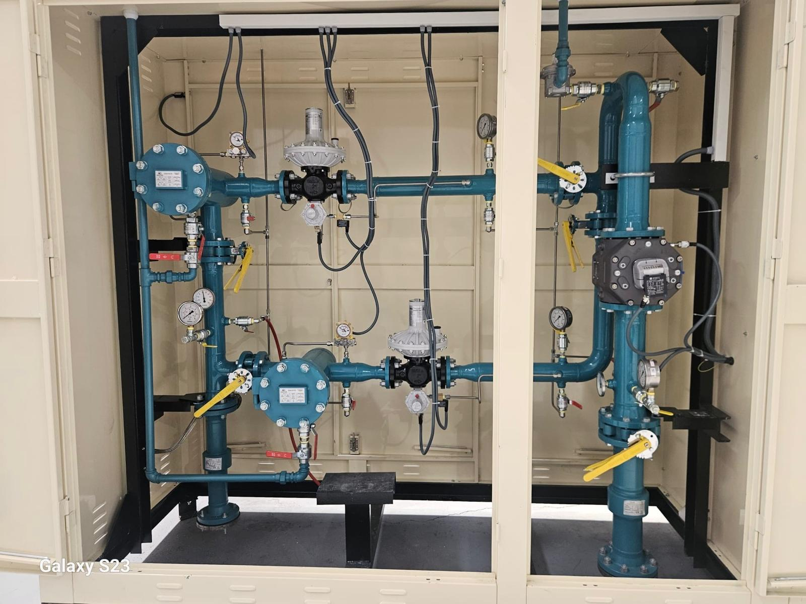
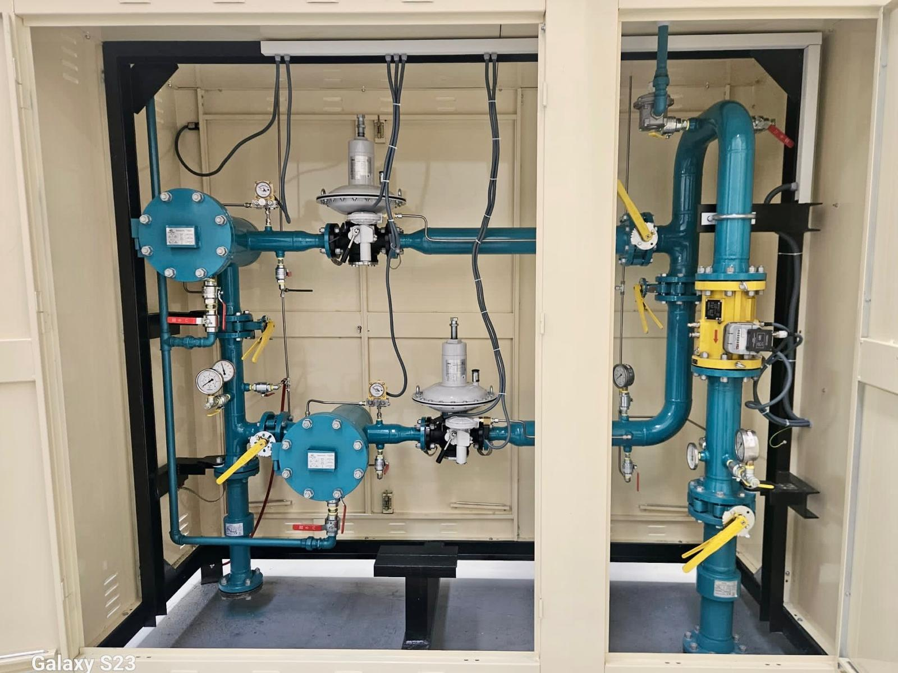
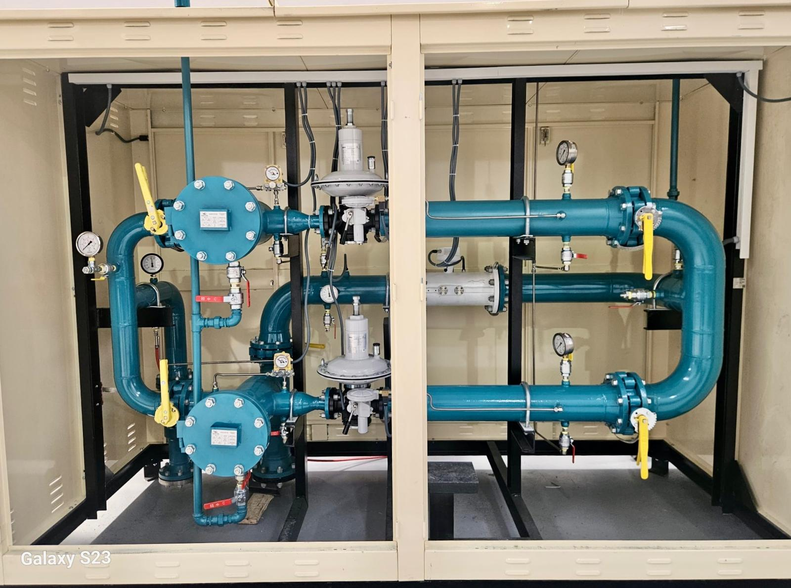

RMS-A İstasyonu
Yüksek basınç iletim hatları için tasarlanmış ana basınç düşürme istasyonları.


5000 m³/h RMS-B İstasyonu
İGDAŞ şebekelerine uygun, yüksek kapasiteli bölge ve imalat düşürme merkezi.

500 m³/h RMS-C İstasyonu
Endüstriyel tesisler ve ticari yapılar için kompakt ölçüm ve regülasyon panelleri.

750 m³/h RMS-C İstasyonu
Hassas tüketim fabrikaları için optimize edilmiş İGDAŞ onaylı hat istasyonu.

1000 m³/h RMS-C İstasyonu
Yüksek debili endüstriyel tesislerin kesintisiz gaz arzı için güvenli çözüm mekanizması.
400 m³/h RS-C İstasyonu
Kabinet tipi, emniyet kapatmalı gaz regülasyon ve ölçüm hattı imalatımız.

Çelik Filtre (Tip 1)
Gaz hatlarındaki partikülleri yüksek hassasiyetle süzerek ekipman emniyeti sağlar.

Çelik Filtre (Tip 2)
Yüksek basınç sınıflarına uygun, flanş bağlantılı özel endüstriyel kartuş filtre hattı.

Endüstriyel Eşanjörler
Basınç düşümü esnasında meydana gelen donmaları önlemek amacıyla tasarlanan ısı değiştiriciler.

Domestik Regülatörler
Bina ve evsel altyapılarda gaz basınç değerini güvenli kullanım seviyesine düşüren elemanlar.

Endüstriyel Regülatörler
Fabrika ve ana dağıtım şebekelerinde yüksek debili gaz akışını regüle eden ağır hizmet ekipmanları.

Kurumsal Küresel Vanalar
Tam sızdırmazlık prensibine sahip, yüksek basınçlı hat kesme ve açma vanaları.